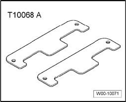
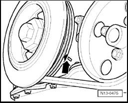
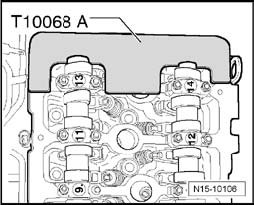
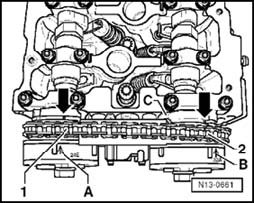

Camshaft, Lifters and Push Rods: Testing and Inspection
Valve timing, checking
Note:
^ Valve timing can be checked when the engine is installed.
Special tools, testers and auxiliary items required

^ Camshaft bar T10068 A
Test sequence
- Remove cylinder head cover and intake manifold.
- Remove front noise insulation.

- Set crankshaft to TDC No. 1 Cyl. marks by turning crankshaft on vibration damper securing bolt in engine direction of rotation: 1 - arrow -.

- The camshaft bar T10068 A must engage in both shaft grooves.
If the camshaft bar cannot be engaged:
- Turn the crankshaft over in direction of rotation one time.
Note:
^ If the camshaft bar T10068 A cannot be installed, turn the crankshaft in engine direction of rotation up to 5 mm past the TDC setting for No. 1 cylinder (dependent on drive chain tolerances).
Verify the installation markings of the camshaft adjuster with the markings on the control housing:

- Marks - A - and - B - on camshaft adjusters must align with notches - arrows - on control housing - C -.
- Distance between tooth - 1 - and tooth - 2 - of camshaft adjuster must be exactly 16 rollers of camshaft roller chain.
Note:
^ Illustration shows a cover which has been removed.
If the marks do not align:
- Adjust valve.
If the marks align:
- Install cylinder head cover and intake manifold.